LightStream is the online lending division of SunTrust (Now Truist). Their main service was to provide low interest rate loans for Practically anything, to people with good to excellent credit history. The process is paperless and online,
and is therefore fast and easy so the user receives access to their funds in less than 24 hours.
Overarching digital content goals to help drive individual page goals, guiding development going forward.
Client
LightStream
Role
UX Designer
UI Designer
Contribution
Research
Proto-personas
Journal Map
User Flow
UI Design
Tools Used
Sketch
Illustrator
Photoshop
Invision
CHALLENGES
The navigation pages for About Us, Questions, and Rates & Terms were missing information and engagement with the user, allowing the conversiton rate be almost none and the bouce rate of those pages superpassed the 62% in unique visitors.
Nowing the range 56 to 70 percent is higher than average, it brought alarm to the team.
Problem #1
DIFFICULT TO DIGEST
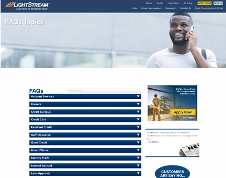
An excessive amount of information presented on a single page.
Too much-hidden content.
Problem #2
CONFUSION
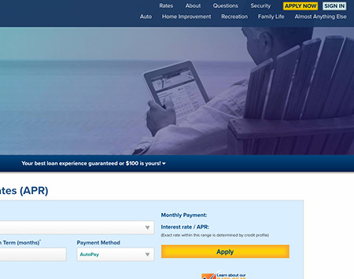
The main benefits for the customer are not displayed promptly.
The benefit-first and/or customer-first appear without actionable cue.
Problem #3
REPEATED CONTENT
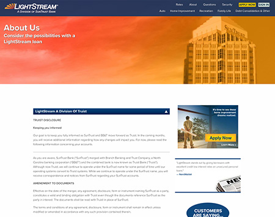
Amount of information that repeated, in teh same page.
Confusing to customers and can damage the SEO of teh website.
DESIGN PROCESS
We decided to move forward with a Human-Centered Design(HCD) process as these pages impact all stakeholders beyond just the end user’s interaction with the system or product itself. For example: filling an application directly from the
product page.
I was involved throughout the whole experience process. In the first part, I worked as the lead designer, along with the product digital managers, developers, and UX agency. For the last phase, I led the design process with the help of a
junior designer.
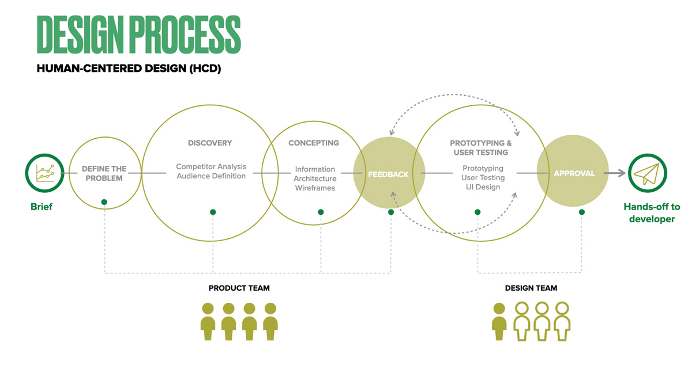
PROBLEM STATEMENTE
Prospect users need to find relevant information about LightStream fast, clearly, and consistently. Visitors wish to have a seamless experience learning more about LightStream, its services, and its benefits.
We will know this to be true when we see how many users move forward from the product pages to the education pages increasing the conversion rate in applications.
POTENTIAL SOLUTIONS
To allow new customers to easily find the “About us” and “How Things Work” sections, design a new user flow to include them within the top navigation.
Develop a “How It Works” section to educate new customers about the benefits and services LightStream provides.
Highlight LightStream’s association with partners and the philanthropic work.
Meet customer expectations with more information in “Contact Us”, and “FAQ” will
become a nav item
AUDIENCE DEFINITION
We were not able to do a user survey, but we have a great data of customer testimonials from many years, that work as audience definition. Created spontaneous concepts and ideas based on the facts we analyzing.
and finding facts that tells us "what" is happening and see how we might take actions to solve the problems.
PROTO-PERSONAS
We used the proto-persona as the project didn’t have the budget or time to conduct user research. As defition we created a full-fledged design persona based on research analysis.
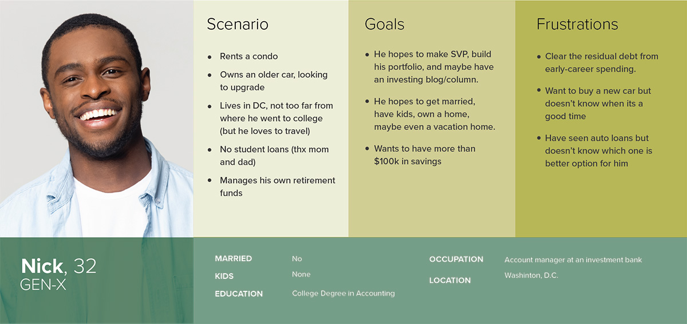
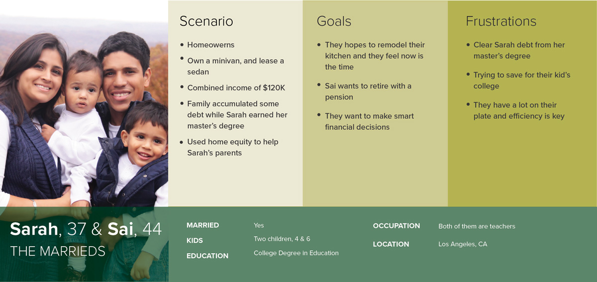
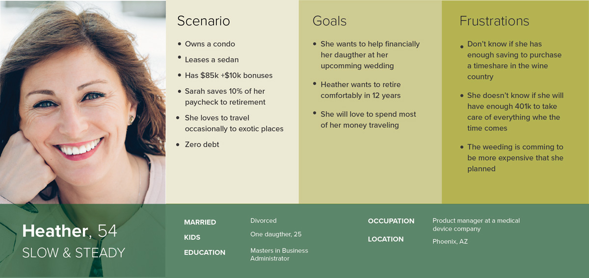
JOURNAL MAPS
A great form of visualization where we add few point of users journey through diferents experiences. And how thhe use goes through to accomplish a goal.
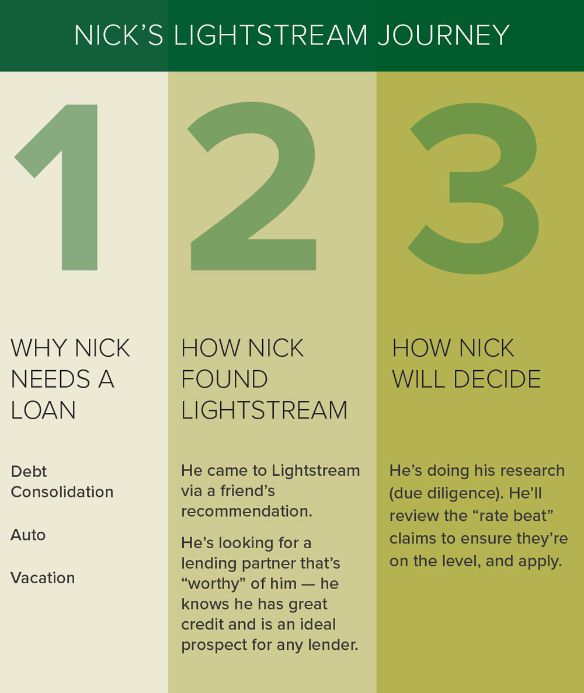
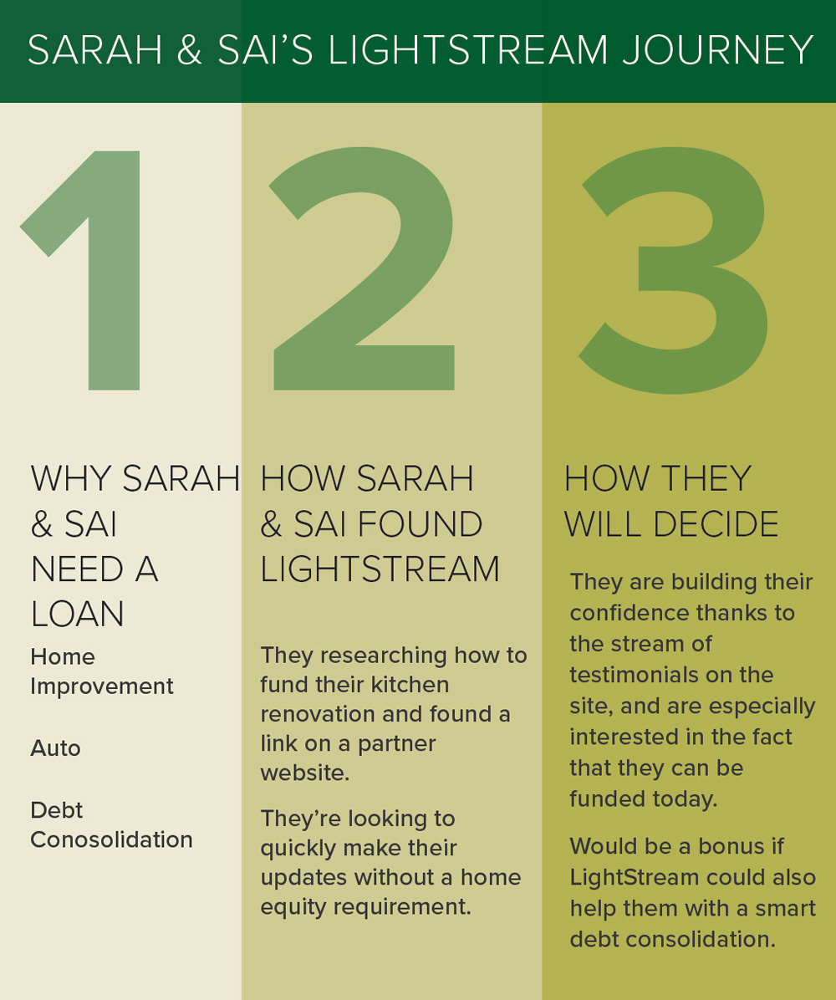
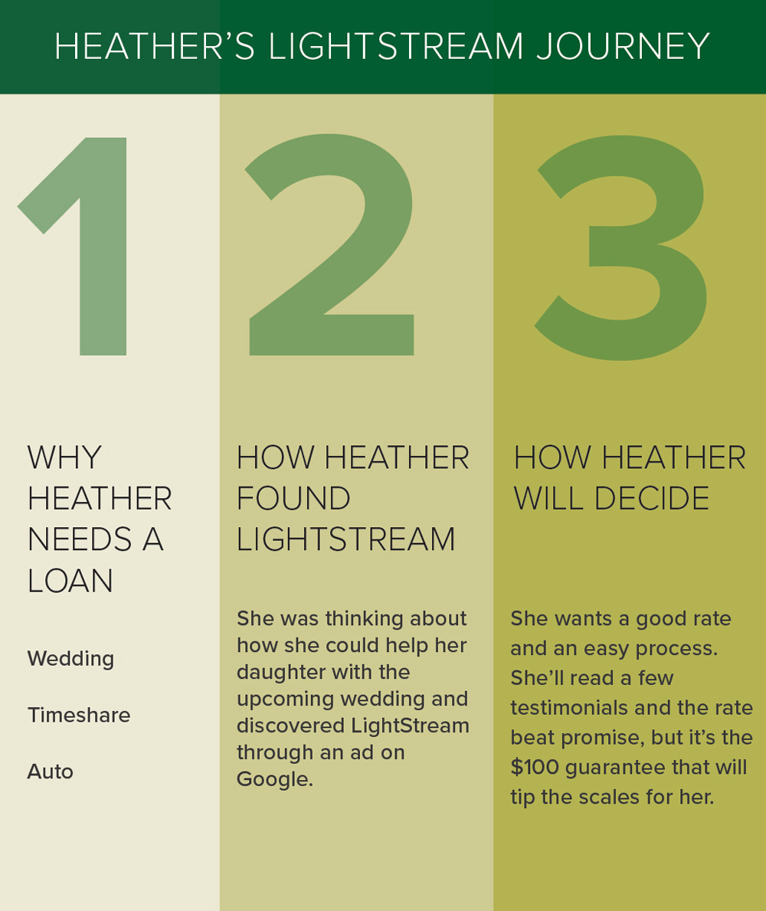
USER FLOW
We created diagram or map of pages as the user must interact to complete a task or achieve the goals we used as possible solutions to the new pages.
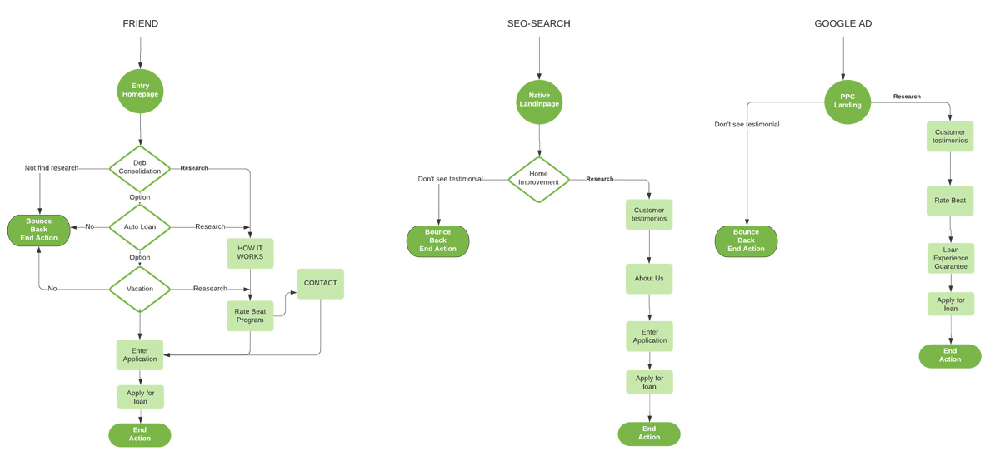
CONCEPTING
Site Map
The strategy using to build the new site map was Strict Hierarchy, it helps to structure offering more hierarchies. Also, helps navigates the subpages from the “Landing page”.
Each subpage (parent), and leads to a series of additional subpages (children).These way will help the users to follow the correct path to reach the child subpages.
OLD SITE MAP
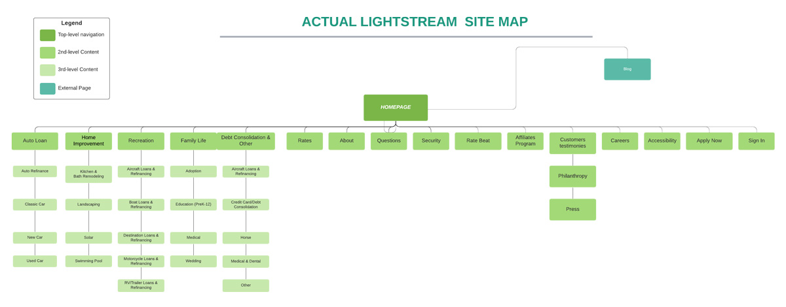
NEW SITE MAP
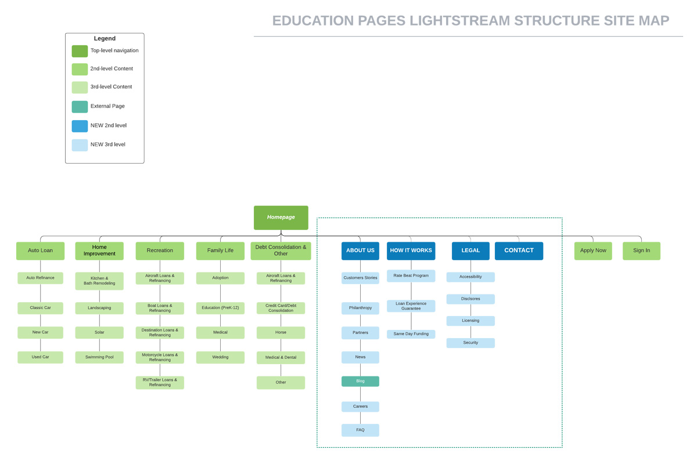
WIREFRAMING
For this particular project we move forward with the High-Fidelity laiding out the concepts for best solution without having to spend time deciding on colors, typography, iconography, and other small visual details.
Mobile Wireframing
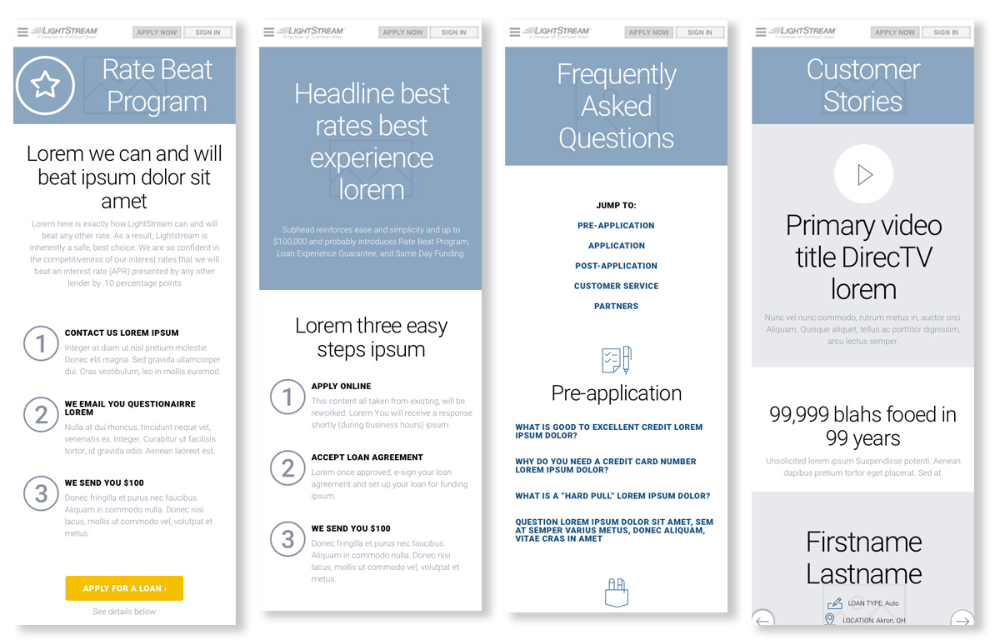
Desktop Wireframing
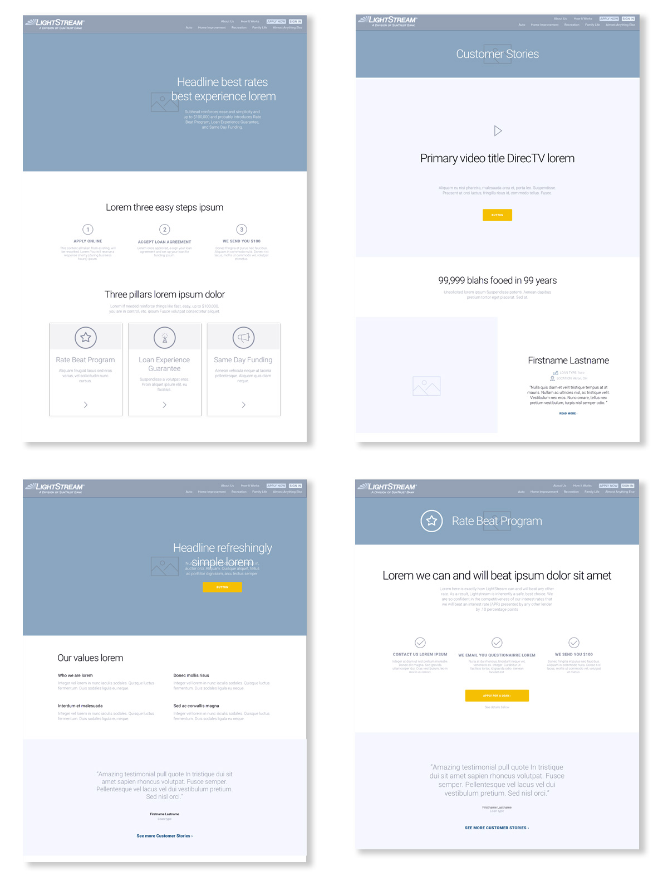
AFFINITY MAP
A skill that will prove useful when communicating with different stakeholders within the company. As we considers how much and what information customers need to know, as well we could campture their experiences, the difficulties and their
positive experiences.
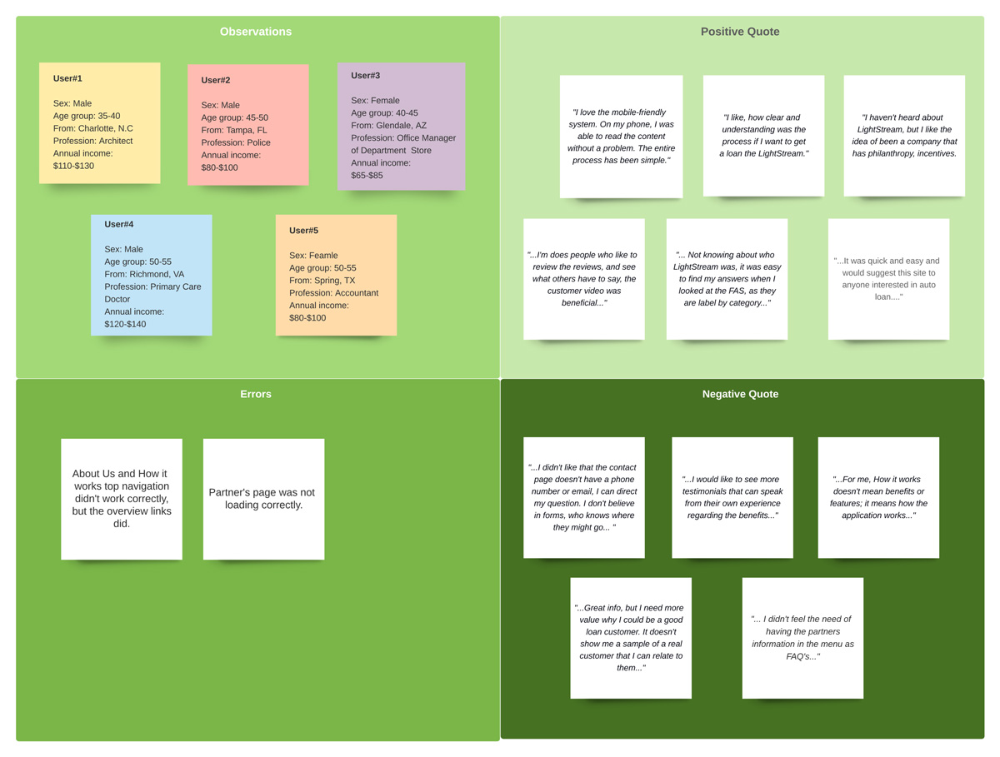
DESIGN LANGUAGE - UI DESIGN
By creating design language we collected the rules and standards that help maintained the consistency in design on a single platform. Also, with the
Design language system I created is a group of design languages that govern the design and user experience.
FINAL DESIGN
The final high-fidelity design and prototyping, made easy for the final approval, before we hand the files to the developers.
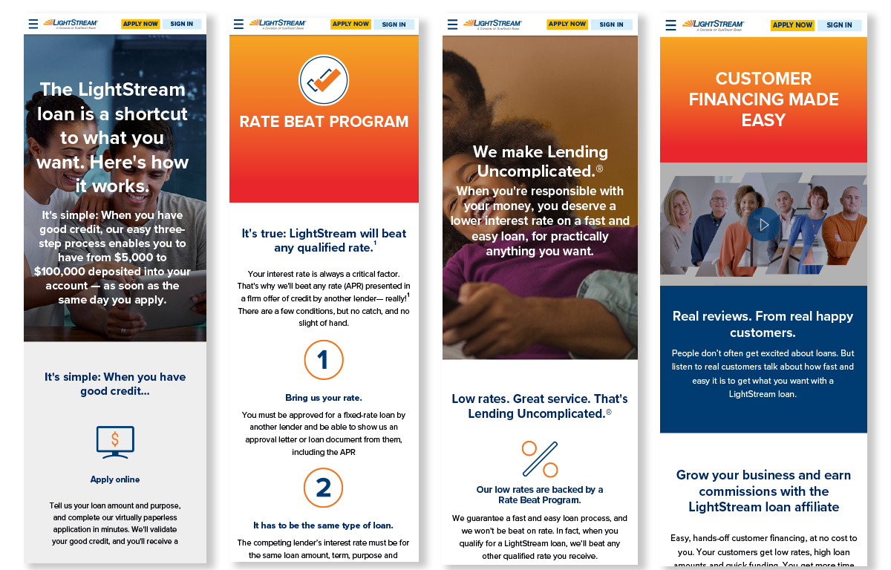
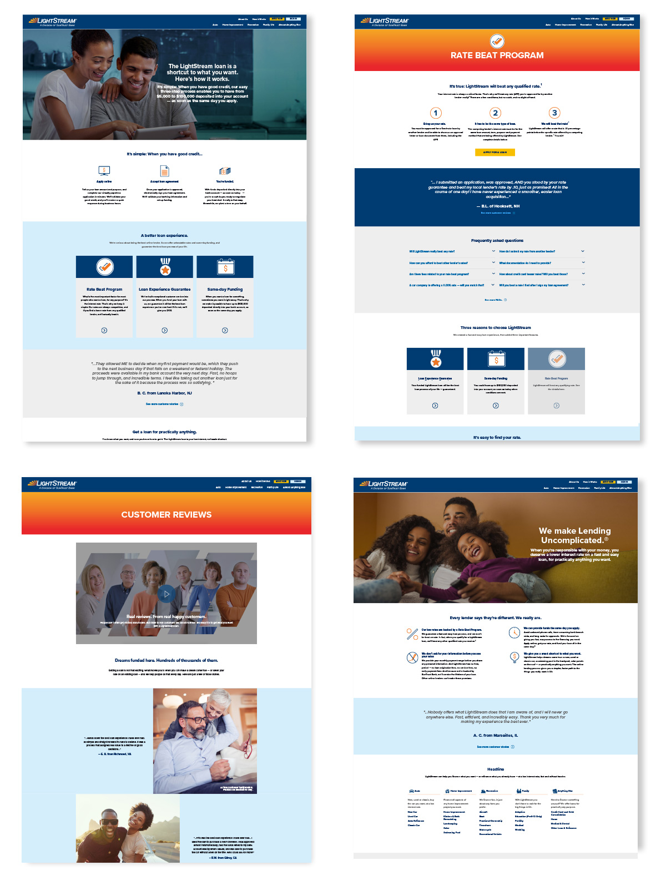
REFLECTION
The highlight of my entire experience creating the Education pages was being the leader in stragezing and worked with the product teams, developer teams, and designers.
The project provide me the ability to work and grow as a product design. Few of the process I used during the project: Understanding the problem (XD- Experience Design),
User research and understanding the user journey & user flow (IA-Information Architecture), Proving solutions, prototyping & testing (IX-Interaction Design),
Applying design guidelines (UI- Interface Design) and proving solution to the problem by using User-Centered-Design/Human-Centered-Design (UX- User experience)